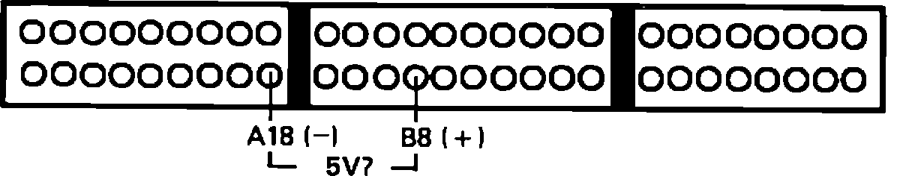
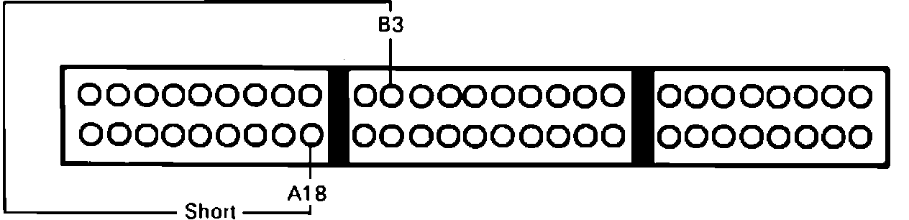
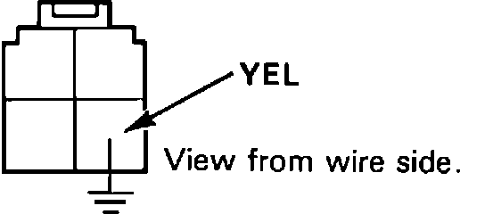

Air Conditioning Signal
Air Conditioning Signal Testing:

1. Install test harness between ECU and connector. If test harness is not available, carefully backprobe wires at ECU connector.
2. Disconnect ECU connector B from main harness only.
3. With ignition on, measure voltage between ECU terminals B8 and A18.
5 volts, proceed to step 5.
Not 5 volts, proceed to next step.
4. Replace electronic control unit. End of test.
5. Reconnect ECU B connector to main harness.
Air Conditioning Signal Testing:

6. Using a test wire short terminal B3 to terminal A18.
Compressor clicks, proceed to step 10.
Compressor does not click, proceed to next step.
Air Conditioning Signal Testing:

7. Connect YEL terminal of A/C clutch relay to ground.
Compressor clicks, proceed to step 9.
Compressor does not click, proceed to next step.
8. Air conditioning system requires inspection, refer to CHASSIS ELECTRICAL DIAGRAMS for additional information. End of test.
9. Repair open YEL wire between ECU terminal B3 and A/C clutch relay. End of test.
10. Start engine.
11. Turn blower and A/C switches on.
Compressor engages, proceed to next step.
Compressor does not engage, proceed to step 13.
12. Air conditioning signal is functioning, no further testing is required.
Air Conditioning Signal Testing:
13. Measure voltage between ECU terminals B8 and A18.
Below 1 volt, proceed to step 15.
Above 1 volts, proceed to next step.
14. Repair open BLU/RED wire between ECU terminal B8 and A/C switch. End of test.
15. Replace electronic control unit.